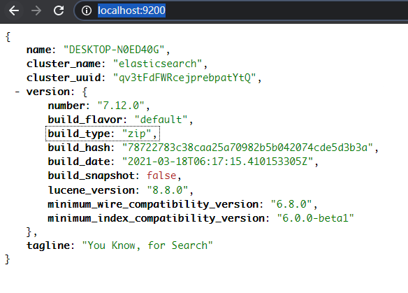
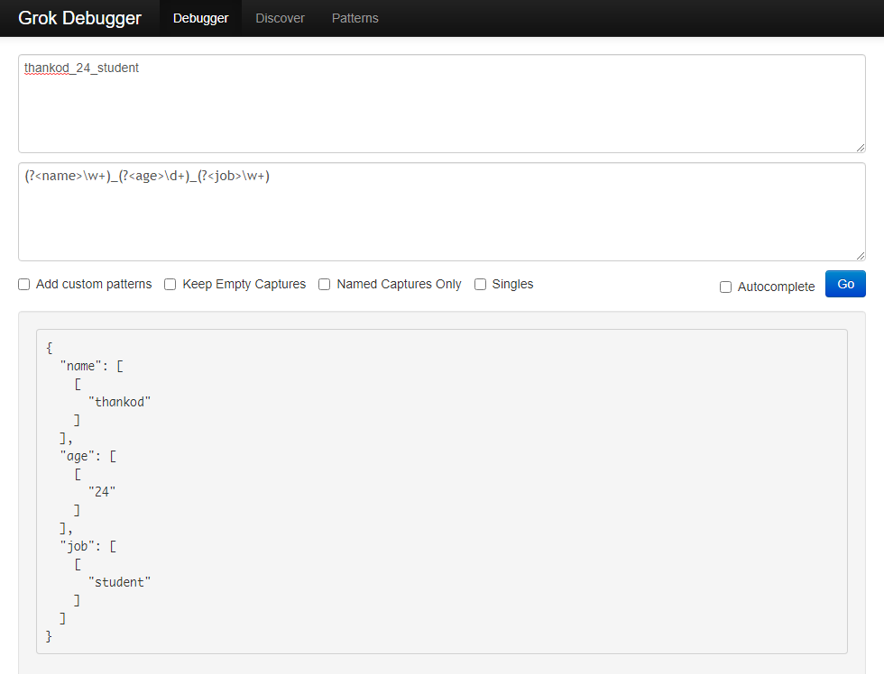
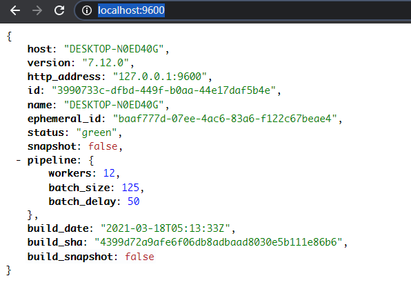
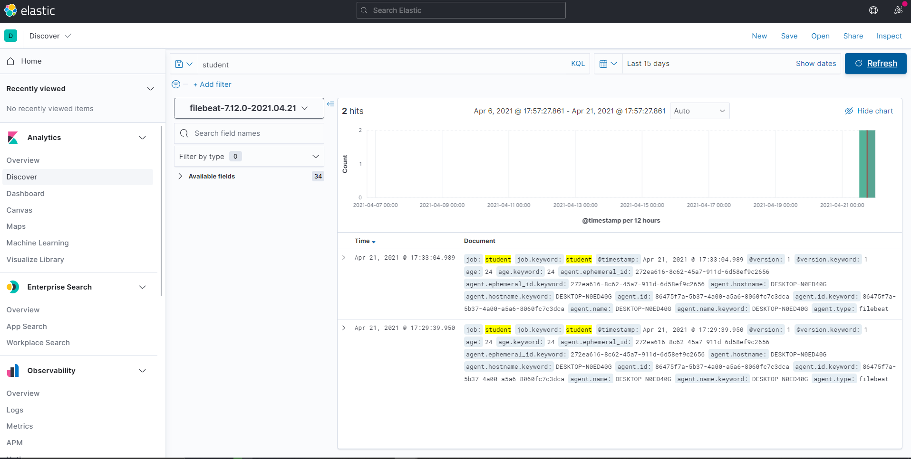
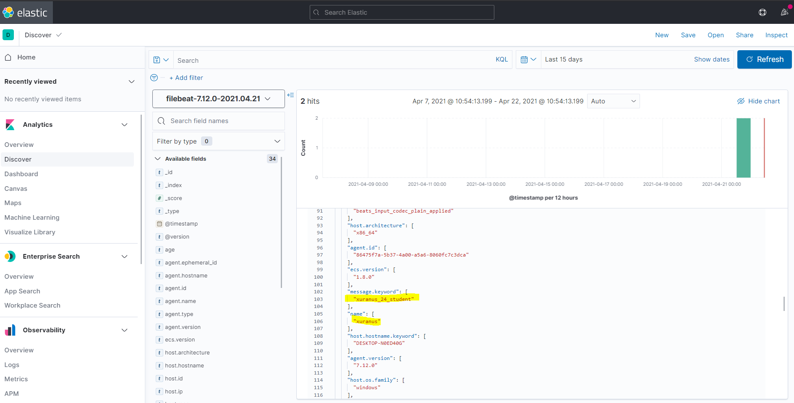

服务运行的过程中就会不断产生日志，日志的常见用途有：
- 查看某个时间段的错误原因
- 分析某个接口的召回率
- 记录接口的输入输出参数，在升级接口的时候做回归测试
对于单点服务的日志只需要用awk，grep命令即可获取需要的信息，但在分布式系统中，管理分布在各个节点的日志就会变得很麻烦，需要有一个系统采集各个节点的日志几种储存。
ELK
ELK提供了一套完整的解决方案，它是三个开源软件的缩写：
- E：ElasticSearch（数据仓库）
- L：Logstash
- K：kibana（图形化展示）
ElasticSearch是一个分布式搜索引擎，提供搜集、分析、存储数据的功能。它的特点有：分布式，零配置，自动发现，索引自动分片，索引副本机制，restful风格接口，多数据源，自动搜索负载等。
Logstash 主要是用来日志的搜集、分析、过滤日志的工具，支持大量的数据获取方式。一般工作方式为c/s架构，client端安装在需要收集日志的主机上，server端负责将收到的各节点日志进行过滤、修改等操作在一并发往ElasticSearch上去。
Kibana可以为Logstash和ElasticSearch提供的日志分析友好的Web界面，可以帮助汇总、分析和搜索重要数据日志。
除了ELK之外，还需要依赖分布在各个节点上的日志采集端：Beat。目前Beats包含四种工具：
- Packetbeat（搜集网络流量数据）
- Topbeat（搜集系统、进程和文件系统级别的CPU和内存使用情况等数据）
- Filebeat（搜集文件数据）
- Winlogbeat（搜集Windows事件日志数据）
工作流程：
Logstash监听5044端口，日志采集节点（Beat）向Logstash发送日志，Logstash将接受到的日志根据部分规则解析，提取目标信息，转化成JSON，发送到ES的9200端口。ES接收到数据后存储，由Kibana做可视化展示。
整套ELK组件都可以在Elastic官网的下载页下载。
安装后，进入各个组件的bin目录下依次启动ES，Kibana，Logstash，Beat：
./elasticsearch # 启动elasticsearch |
检查ES的状态：

Logstash的启动需要指定配置文件：logstash -f ../config/logstash-sample.conf。配置文件logstash-sample.conf的格式如下：input {
beats {
port => 5044
}
}
output {
elasticsearch {
hosts => ["http://localhost:9200"]
index => "%{[@metadata][beat]}-%{[@metadata][version]}-%{+YYYY.MM.dd}"
#user => "elastic"
#password => "changeme"
}
}
input中声明Logstash监听5044端口，接收来自Beats的日志。output中说明将处理过的日志输出到ElasticSearch。其中ElasticSearch的配置和数据库的对应关系如下：
index：数据库type：表document：一条数据
初始的配置没有配置filter，此时Logstash起到的作用是直接转发，相当于Beat的数据不经处理直接到ElasticSearch。Logstash发挥的作用必须通过配置filter实现：
filter { |
可以用grok debugg来测试grok配置的生成效果。
(?<name>\w+)_(?<age>\d+)_(?<job>\w+)可以将”thankod_24_student”解析成JSON对象：

检查Logstash状态：

最后启动Beat。这里Beat使用FileBeat，配置FileBeat。需要将filebeat.inputs.enable设为true，向filebeat.inputs.paths中配置监听的日志目录。filebeat.inputs:
- type: log
# Change to true to enable this input configuration.
enabled: true
# Paths that should be crawled and fetched. Glob based paths.
paths:
- /logs/1.log
#- c:\programdata\elasticsearch\logs\*
由于此处采用Beat向Logstash传递日志的架构，注解掉ElasticSearch的设置，配置输出为Logstash：# -------- Elasticsearch Output --------
#output.elasticsearch:
# Array of hosts to connect to.
#hosts: ["localhost:9200"]
# Protocol - either `http` (default) or `https`.
#protocol: "https"
# Authentication credentials - either API key or username/password.
#api_key: "id:api_key"
#username: "elastic"
#password: "changeme"
# ------- Logstash Output --------
output.logstash:
# The Logstash hosts
hosts: ["localhost:5044"]
启动Beat：filebeat -e -c filebeat.yml，向1.log写入两行日志：thankod_24_student
xuranus_24_student
浏览器输入http://localhost:5601/app/discover进入Kibana的Web页面，Discover中可以使用KQL搜索检索到这两条记录了：


其他的日志处理架构
本处的日志采集与离线存储架构使用FileBeat -> Logstash -> ElasticSearch，除了这种架构也可以使用FLume -> Kafka -> Hadoop。kafka的分布式缓存功能可以在数据量特别大的时候缓冲数据，防止丢失。
日志数据除了离线存储之外还有在线流式分析，从Kafka传出的数据可以交给：
- Storm
- Spark Streaming
- Flink
之后可以进行一些实时分析，如推荐系统。
技术选型需要考虑实际业务量，QPS不高的业务完全可以用轻量级工具
参考资料：